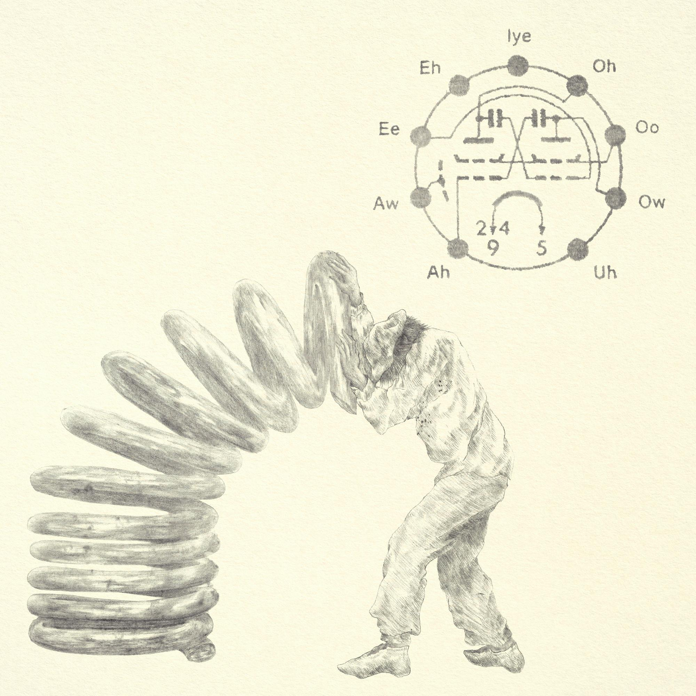
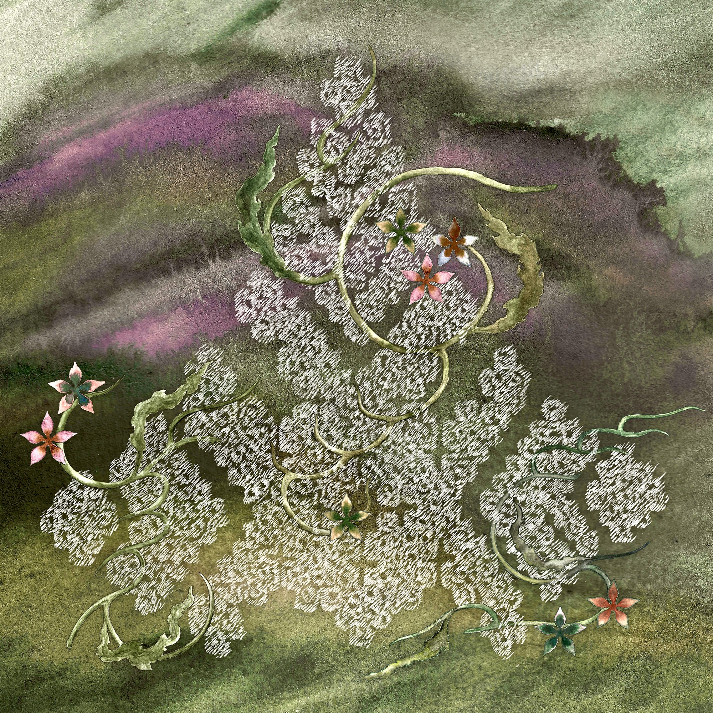
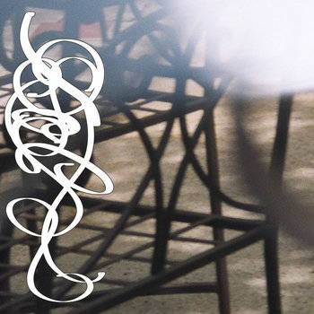

shows:
[live] pocket phonics album release: dovecot and ebilen @ Arcane Space, 08.16.2026
[live] Wu Wei: STEVIE @ Water & Power, 06.27.2026
[live] Spiraling: James K, LEECH, Dovecot, Sysk and Spiraling Residents with Readings by Zack Darsee @ Canary, 03.27.2025
[live] High Quality Transmission: Joshua Chuquimia Crampton, Dovecot @ Demo Art and Books, 01.18.2025